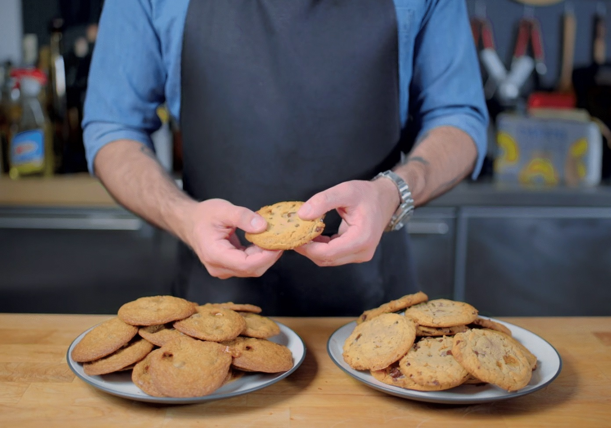

Tracy's Sumbitch Cookies

Ingredients
- 1/2 cup unsalted butter, softened
- 3/4 cup creamy peanut butter
- 1/2 cup brown sugar
- 1/2 cup white sugar
- 1 egg
- 1 teaspoon vanilla
- 1 1/4 cup all purpose flour
- 1/2 teaspoon baking soda
- 1/4 teaspoon salt
- 1/2 cup chocolate chips
- 24 caramel stuffed chocolate candies (Either Rolos or Caramel Stuffed Hershey's Kisses)
Instructions
- Preheat oven to 350° and line baking sheet with parchment paper
- In the bowl of your stand mixer fitted with the paddle attachment, cream together your butter and peanut butter. Add the sugars, and mix until smooth.
- Mix in the egg and vanilla, being sure to scrape down the sides to evenly incorporate.
- Add the flour, baking soda, and salt, mix on low until just combined.
- By hand, stir in the chocolate chips.
- Using a cookie scoop, (I used a 1 1/2TB size) Scoop out dough and divide into two.
- Place an unwrapped caramel candy in the center of the dough, cover with the over half, sealing the sides, and roll into a ball. Place on baking sheet two inches apart. Repeat process until dough is gone.
- Bake for 10-12 minutes, remove and rest for 2-3 minutes before transferring to a cooling rack. Enjoy!
Go Back to Home Page